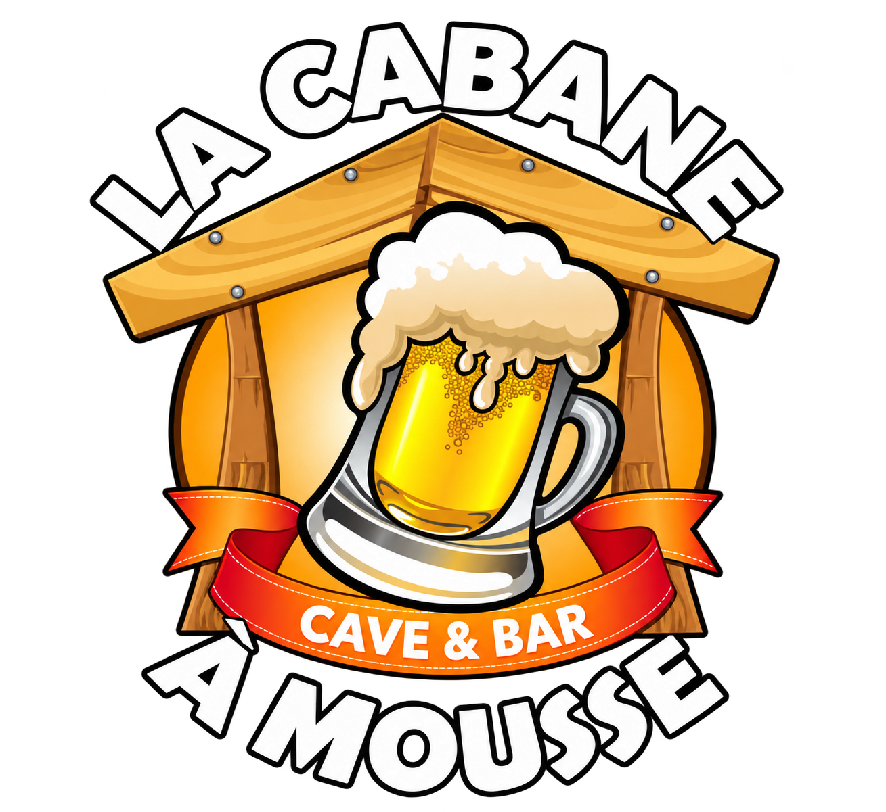
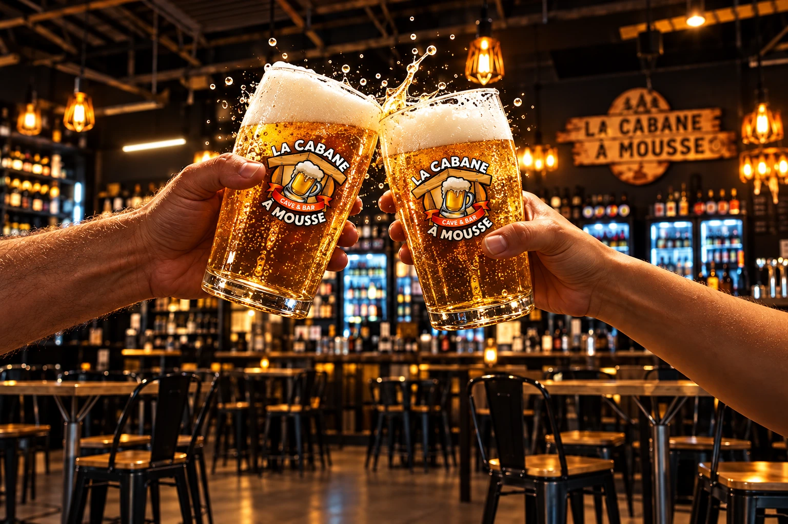
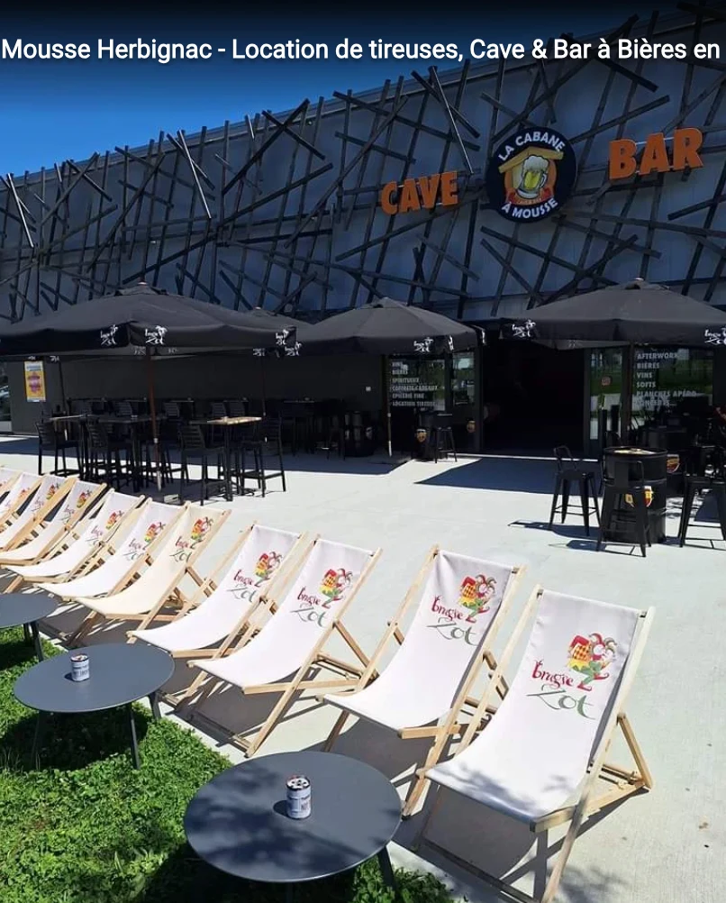

Une cave. Un bar. Votre Cabane.
Des bières d’ici et d’ailleurs, à déguster sur place ou à emporter. Un lieu pour se retrouver à Herbignac.
Explorer la cave →
Nous trouver ↗
Cave · Bar · Location de tireuses
Découvrir la Cabane ↓Une envie, un style, une découverte. Prenez le temps de choisir votre prochaine bière à la cave.
Découvrir la location →Location de tireuses à bière pour vos anniversaires, mariages et soirées. Parlons ensemble de votre événement.
Préparer votre événement →21 avenue de la Monneraye
44410 Herbignac
Pour préparer votre événement, venez échanger avec l’équipe à la Cabane.
